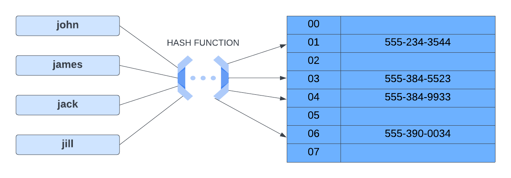

Hash Table (Hash Map) Intro
In computing, a hash table (also called a hash map or dictionary) is a data structure that implements an associative array abstract data type — a structure that maps keys to values. A hash table uses a hash function to compute an index, also called a hash code, into an array of buckets or slots, where the desired value can be found along with its index.
Here is a visual representation of a hash table:

We have our keys on the left, which are names of people, and we have our stored values on the right, which in this case, are their phone numbers. In the middle is the hash function.
Hash Function
A hash function is a function that takes in a key and returns an index. The index is used to determine where the key-value pair should be stored in the hash table. The hash function should always return the same index for the same key.
Hash Collisions
There is something called a hash collision that can occur when using hash tables. A collision occurs when two keys are mapped to the same index in the array. A good hash function will evenly distribute the keys across the hash table. This will minimize collisions and improve the time complexity of the hash table, which we'll discuss shortly.
Hash Tables in TypeScript
Hash tables are used in many different languages. In TypeScript, there are actually some built in structures that use hash tables. For example, an object is an example of a hash table because data is represented in key-value pairs. There are also Map and Set data structures that use hash tables. In this section, we will do some challenges that use maps and sets, but we will also learn how to implement a hash table from scratch.
Time & Space Complexity
When it comes to time complexity, hash tables are a great data structure for fast lookups. The average time complexity for lookups, insertions, and deletions is O(1). Collisions can slow down the time complexity to O(n).
Space complexity is O(n) because we have to store all of the keys and values in the hash table and the size of the hash table is proportional to the number of keys and values.
| Operation | Time Complexity | Space Complexity |
|---|---|---|
| Access | O(1) | O(n) |
| Search | O(1) | O(n) |
| Insertion | O(1) | O(n) |
| Deletion | O(1) | O(n) |
Hash Methods
Here are some of the methods that are available on a hash table:
set(key, value)- Adds a key-value pair to the hash table.get(key)- Returns the value associated with a key.remove(key)- Removes a key-value pair from the hash table.has(key)- Returns true if the key exists in the hash table, false otherwise.keys()- Returns an array of all the keys in the hash table.values()- Returns an array of all the values in the hash table.
We will get to implementing our own custom hash table, but first let's look at maps and sets in TypeScript.